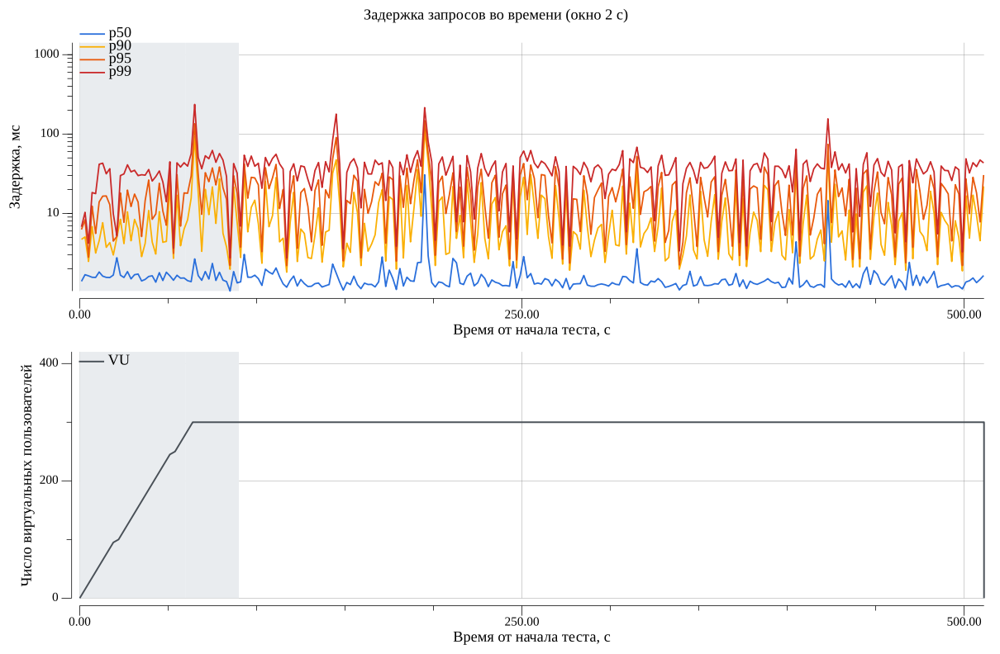
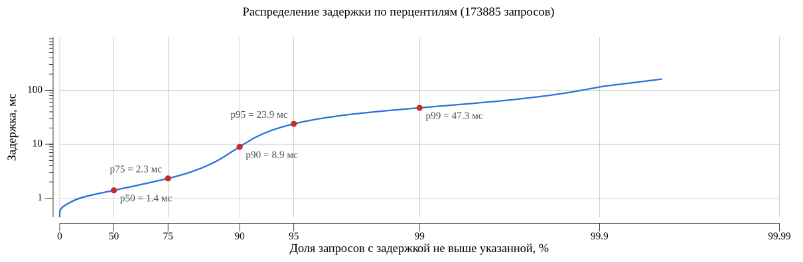
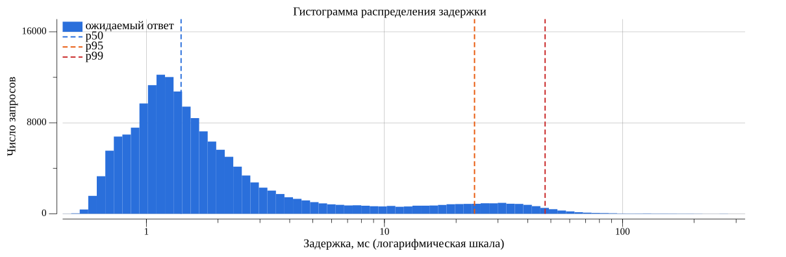
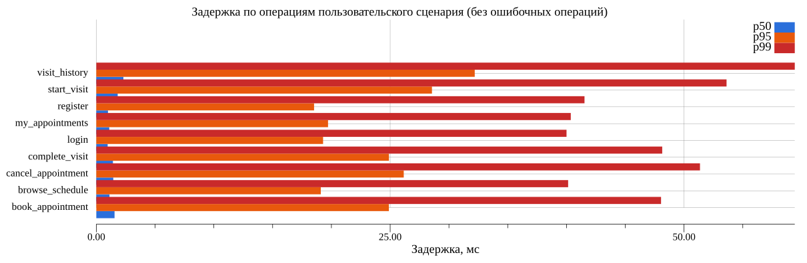
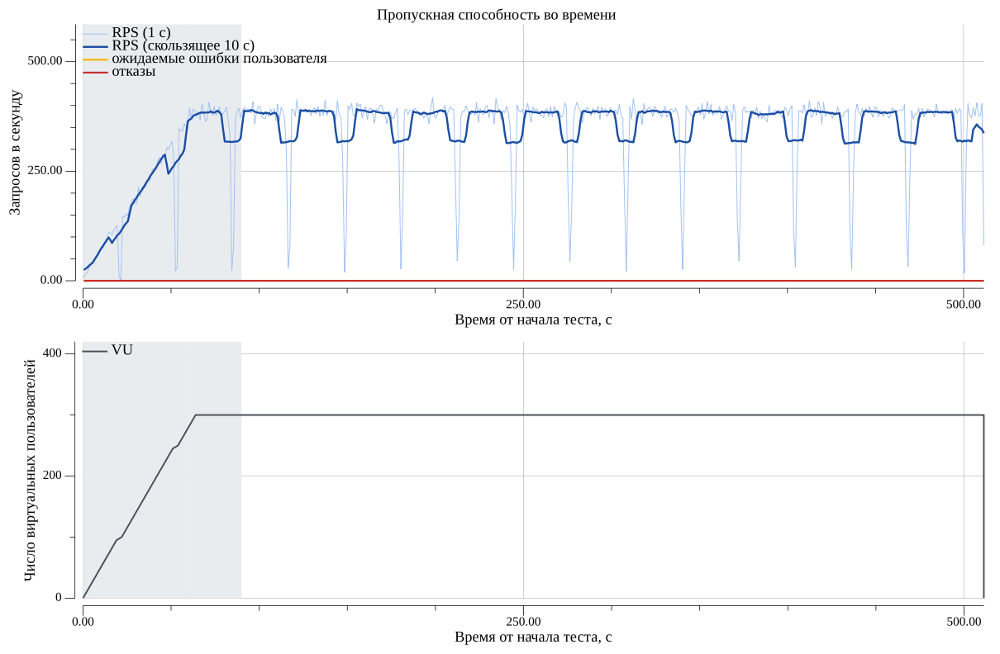
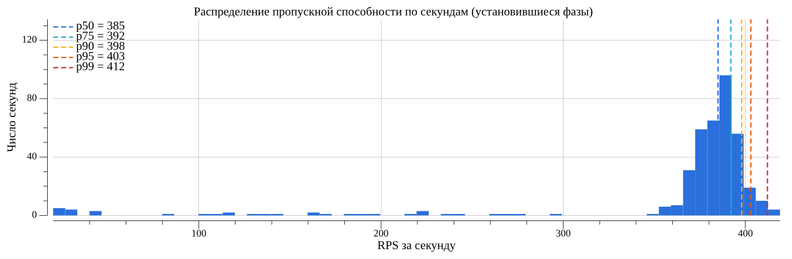
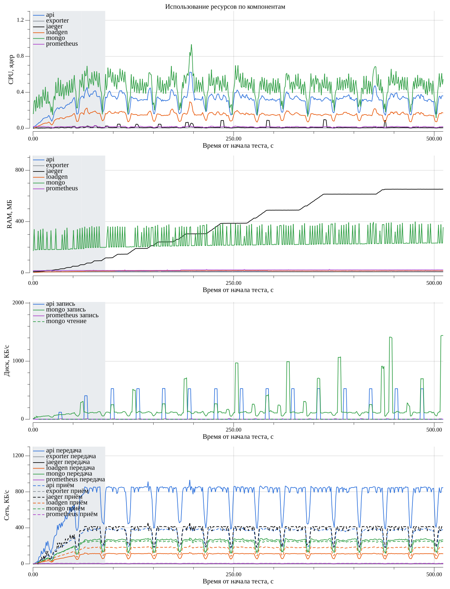

Фиксированная нагрузка
Запросов173885
RPS среднее / медиана340 / 382
p50 / p95 задержки1.40 / 23.9 мс
p99 задержки47.3 мс
Отказы0.00%
Ошибочные операции0.00%
Ошибочных операций: задано 0%, фактически 0.0%. Отказы 0.00%. Дрейф p95 между первым и последним отрезком ×0.98, RPS ×0.97. Тренд памяти: api -1.56 МБ/ч, exporter -0.13 МБ/ч, jaeger 5463 МБ/ч, loadgen -7.52 МБ/ч, mongo 249 МБ/ч, prometheus 46.2 МБ/ч.
Задержка
| Задержка, мс | count | min | mean | p50 | p75 | p90 | p95 | p99 | max |
|---|---|---|---|---|---|---|---|---|---|
| Все запросы | 173885 | 0.45 | 4.38 | 1.40 | 2.33 | 8.94 | 23.9 | 47.3 | 324 |
| Корректные операции | 173885 | 0.45 | 4.38 | 1.40 | 2.33 | 8.94 | 23.9 | 47.3 | 324 |
| Ошибочные операции | 0 | — | — | — | — | — | — | — | — |



Операции пользовательского сценария
| Операция | count | min | mean | p50 | p75 | p90 | p95 | p99 | max | Отказы | Ошибочные |
|---|---|---|---|---|---|---|---|---|---|---|---|
| book_appointment | 25207 | 0.83 | 4.60 | 1.55 | 2.38 | 9.86 | 24.9 | 48.0 | 204 | 0.00% | 0.00% |
| browse_schedule | 25244 | 0.57 | 3.36 | 1.12 | 1.61 | 5.73 | 19.1 | 40.1 | 139 | 0.00% | 0.00% |
| cancel_appointment | 7497 | 0.76 | 4.70 | 1.44 | 2.28 | 10.6 | 26.2 | 51.4 | 156 | 0.00% | 0.00% |
| complete_visit | 17614 | 0.71 | 4.54 | 1.42 | 2.20 | 10.1 | 24.9 | 48.1 | 189 | 0.00% | 0.00% |
| login | 25281 | 0.45 | 3.21 | 0.96 | 1.39 | 5.40 | 19.3 | 40.0 | 137 | 0.00% | 0.00% |
| my_appointments | 25169 | 0.51 | 3.39 | 1.10 | 1.58 | 5.52 | 19.7 | 40.4 | 211 | 0.00% | 0.00% |
| register | 5166 | 0.52 | 3.13 | 0.99 | 1.44 | 4.63 | 18.5 | 41.5 | 81.6 | 0.00% | 0.00% |
| start_visit | 17641 | 1.00 | 5.52 | 1.82 | 2.86 | 13.3 | 28.6 | 53.6 | 262 | 0.00% | 0.00% |
| visit_history | 25066 | 0.79 | 6.59 | 2.30 | 3.84 | 15.7 | 32.2 | 59.4 | 324 | 0.00% | 0.00% |

Пропускная способность
| Показатель | count | min | mean | p50 | p75 | p90 | p95 | p99 | max |
|---|---|---|---|---|---|---|---|---|---|
| RPS за секунду | 512 | 2.00 | 340 | 382 | 391 | 398 | 403 | 411 | 418 |


Фазы нагрузки
| Участок | VU | RPS ср. | RPS p50 | RPS p5 | p50 мс | p95 мс | p99 мс | Отказы | CPU api | CPU mongo | RAM api, МБ | SLO |
|---|---|---|---|---|---|---|---|---|---|---|---|---|
| разгон | 300 | 174 | 177 | 15.7 | 1.59 | 16.7 | 37.3 | 0.00% | 0.18 | 0.36 | 9.29 | да |
| прогрев | 300 | 360 | 383 | 191 | 1.60 | 32.5 | 73.5 | 0.00% | 0.35 | 0.50 | 11.9 | да |
| стабильная нагрузка | 300 | 362 | 385 | 151 | 1.37 | 24.0 | 47.2 | 0.00% | 0.32 | 0.47 | 12.3 | да |
Динамика длительной нагрузки
| Участок | VU | RPS ср. | RPS p50 | RPS p5 | p50 мс | p95 мс | p99 мс | Отказы | CPU api | CPU mongo | RAM api, МБ | SLO |
|---|---|---|---|---|---|---|---|---|---|---|---|---|
| 1/5 | 300 | 367 | 388 | 245 | 1.42 | 23.8 | 47.1 | 0.00% | 0.33 | 0.48 | 12.4 | да |
| 2/5 | 300 | 356 | 385 | 138 | 1.45 | 29.8 | 60.3 | 0.00% | 0.34 | 0.49 | 12.5 | да |
| 3/5 | 300 | 367 | 385 | 190 | 1.35 | 23.6 | 43.9 | 0.00% | 0.31 | 0.46 | 12.3 | да |
| 4/5 | 300 | 366 | 384 | 211 | 1.31 | 19.5 | 40.8 | 0.00% | 0.31 | 0.46 | 11.8 | да |
| 5/5 | 300 | 356 | 383 | 114 | 1.34 | 23.4 | 46.6 | 0.00% | 0.31 | 0.46 | 12.5 | да |
| Компонент | Тренд памяти на установившемся участке, МБ/ч |
|---|---|
| api | -1.56 |
| exporter | -0.13 |
| jaeger | 5463 |
| loadgen | -7.52 |
| mongo | 249 |
| prometheus | 46.2 |
Использование ресурсов
| Компонент | Метрика | min | max | mean | median | p95 |
|---|---|---|---|---|---|---|
| api | CPU, ядер | 0.01 | 0.62 | 0.30 | 0.32 | 0.41 |
| api | Троттлинг CPU, с/с | 0.00 | 0.02 | 0.00 | 0.00 | 0.00 |
| api | Чтение с диска, КБ/с | 0.00 | 0.00 | 0.00 | 0.00 | 0.00 |
| api | Запись на диск, КБ/с | 0.00 | 530 | 57.7 | 0.00 | 527 |
| api | RAM (working set), МБ | 4.05 | 18.2 | 11.9 | 12.1 | 13.4 |
| api | Сеть, приём КБ/с | 0.47 | 412 | 330 | 377 | 392 |
| api | Сеть, передача КБ/с | 0.54 | 930 | 729 | 841 | 857 |
| api | Процессы и потоки | 8.00 | 15.0 | 8.96 | 9.00 | 9.00 |
| exporter | CPU, ядер | 0.00 | 0.01 | 0.00 | 0.00 | 0.01 |
| exporter | Троттлинг CPU, с/с | 0.00 | 0.00 | 0.00 | 0.00 | 0.00 |
| exporter | Чтение с диска, КБ/с | 0.00 | 0.00 | 0.00 | 0.00 | 0.00 |
| exporter | Запись на диск, КБ/с | 0.00 | 0.00 | 0.00 | 0.00 | 0.00 |
| exporter | RAM (working set), МБ | 3.15 | 8.36 | 7.61 | 7.69 | 7.88 |
| exporter | Сеть, приём КБ/с | 0.27 | 0.60 | 0.51 | 0.54 | 0.55 |
| exporter | Сеть, передача КБ/с | 2.29 | 4.62 | 4.28 | 4.60 | 4.61 |
| exporter | Процессы и потоки | 4.00 | 5.00 | 4.99 | 5.00 | 5.00 |
| jaeger | CPU, ядер | 0.00 | 0.10 | 0.01 | 0.01 | 0.05 |
| jaeger | Троттлинг CPU, с/с | 0.00 | 0.00 | 0.00 | 0.00 | 0.00 |
| jaeger | Чтение с диска, КБ/с | 0.00 | 0.00 | 0.00 | 0.00 | 0.00 |
| jaeger | Запись на диск, КБ/с | 0.00 | 0.00 | 0.00 | 0.00 | 0.00 |
| jaeger | RAM (working set), МБ | 10.6 | 653 | 377 | 387 | 653 |
| jaeger | Сеть, приём КБ/с | 0.00 | 461 | 353 | 414 | 416 |
| jaeger | Сеть, передача КБ/с | 0.00 | 1.12 | 0.82 | 0.87 | 1.04 |
| jaeger | Процессы и потоки | 7.00 | 8.00 | 8.00 | 8.00 | 8.00 |
| loadgen | CPU, ядер | 0.00 | 0.29 | 0.14 | 0.15 | 0.19 |
| loadgen | Троттлинг CPU, с/с | 0.00 | 0.00 | 0.00 | 0.00 | 0.00 |
| loadgen | Чтение с диска, КБ/с | 0.00 | 0.00 | 0.00 | 0.00 | 0.00 |
| loadgen | Запись на диск, КБ/с | 0.00 | 0.00 | 0.00 | 0.00 | 0.00 |
| loadgen | RAM (working set), МБ | 3.22 | 16.5 | 14.2 | 15.0 | 16.1 |
| loadgen | Сеть, приём КБ/с | 1.12 | 202 | 159 | 181 | 188 |
| loadgen | Сеть, передача КБ/с | 0.97 | 126 | 99.6 | 113 | 117 |
| loadgen | Процессы и потоки | 7.00 | 9.00 | 8.51 | 9.00 | 9.00 |
| mongo | CPU, ядер | 0.12 | 0.93 | 0.46 | 0.46 | 0.62 |
| mongo | Троттлинг CPU, с/с | 0.00 | 0.75 | 0.17 | 0.16 | 0.31 |
| mongo | Чтение с диска, КБ/с | 0.00 | 60.0 | 0.49 | 0.00 | 0.00 |
| mongo | Запись на диск, КБ/с | 7.73 | 1442 | 180 | 112 | 704 |
| mongo | RAM (working set), МБ | 173 | 398 | 253 | 222 | 379 |
| mongo | Сеть, приём КБ/с | 0.33 | 270 | 217 | 247 | 255 |
| mongo | Сеть, передача КБ/с | 0.08 | 289 | 232 | 265 | 278 |
| mongo | Процессы и потоки | 39.0 | 102 | 81.9 | 84.0 | 97.0 |
| prometheus | CPU, ядер | 0.00 | 0.03 | 0.02 | 0.02 | 0.02 |
| prometheus | Троттлинг CPU, с/с | 0.00 | 0.00 | 0.00 | 0.00 | 0.00 |
| prometheus | Чтение с диска, КБ/с | 0.00 | 0.00 | 0.00 | 0.00 | 0.00 |
| prometheus | Запись на диск, КБ/с | 0.00 | 12.0 | 0.88 | 0.00 | 7.00 |
| prometheus | RAM (working set), МБ | 17.1 | 27.2 | 21.4 | 22.9 | 23.3 |
| prometheus | Сеть, приём КБ/с | 2.93 | 7.31 | 6.21 | 6.67 | 6.79 |
| prometheus | Сеть, передача КБ/с | 0.44 | 1.27 | 0.98 | 1.02 | 1.15 |
| prometheus | Процессы и потоки | 8.00 | 14.0 | 8.03 | 8.00 | 8.00 |

Коды ответов
| Код | Запросов |
|---|---|
| 200 | 125871 |
| 201 | 48014 |
Окружение прогона
| Компонент | Логические CPU | Квота CPU | Резерв RAM, МБ | Лимит RAM, МБ | Образ | ID образа |
|---|---|---|---|---|---|---|
| api | 0,1 | 1 | 512 | 512 | vitaline-lab6-api:20261115-212304-stable-htyx | 579b68ac81b6 |
| exporter | 6,7 | — | 64 | 64 | vitaline-lab4-exporter:1 | 1d23c3f2327d |
| jaeger | 6,7 | — | 1536 | 1536 | jaegertracing/jaeger:2.11.0 | b585df1b6299 |
| loadgen | 4,5 | — | 2048 | 2048 | vitaline-lab4-loadgen:1 | 48e1046c6d0e |
| mongo | 2,3 | 1 | 1024 | 1024 | mongo:7 | 9896df581dfd |
| prometheus | 6,7 | — | 768 | 768 | prom/prometheus:v3.5.0 | 63805ebb8d2b |